Ге́нри Форд
Биография
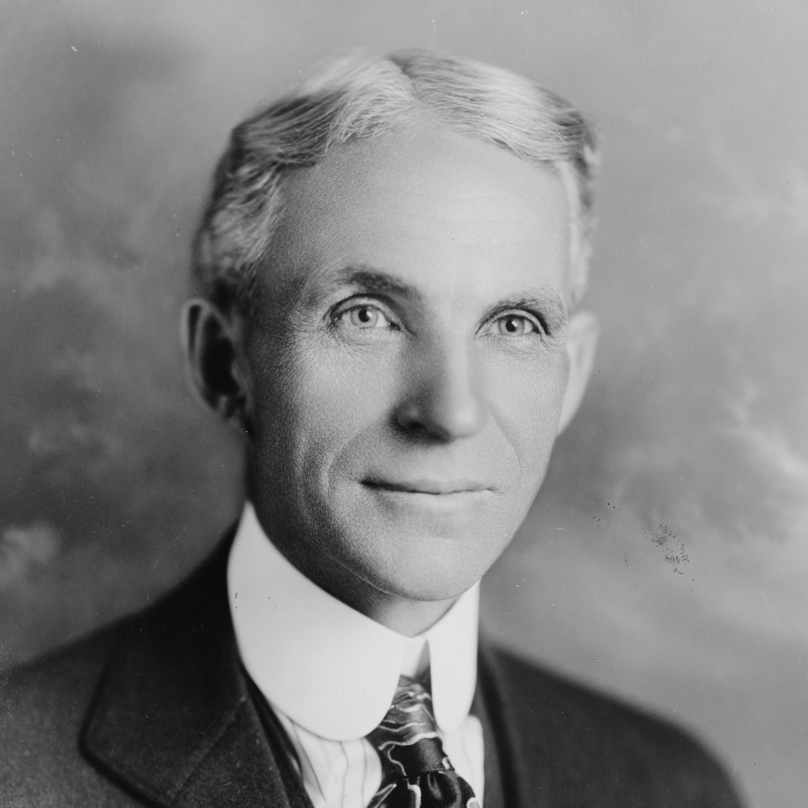
- Дата рождения: 30 июля 1863
- Место рождения: Springwells Township,Уэйн,Мичиган,США
- Дата смерти: 7 апреля 1947 (83 года)
- Место смерти: Дирборн,Уэйн,Мичиган,США
- Род деятельности: Изобретатель,предприниматель,промышленник
- Отец: Уильям Форд
- Мать: Мари Форд
- Супруга: Клара Джейн Форд
- Дети: Эдсель Форд
- Награды и премии: Медаль-Эллиота Крессона(1928),Медаль-Холли(1936),Вашингтонская премия(1944)
- Основатель компании Ford Motor Company
История знаменитости
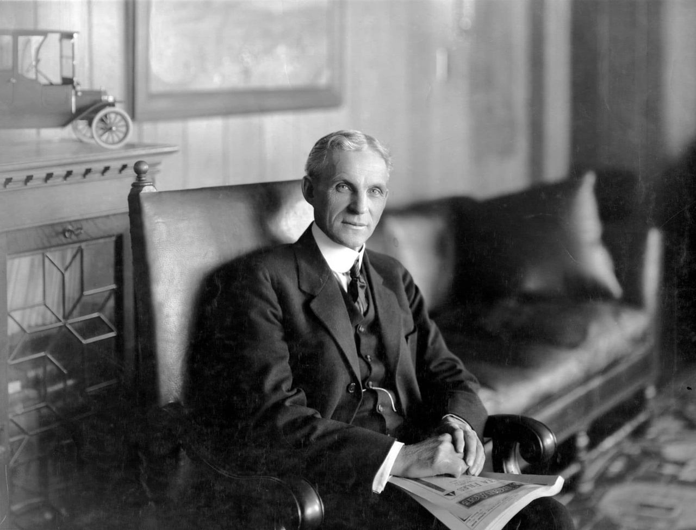
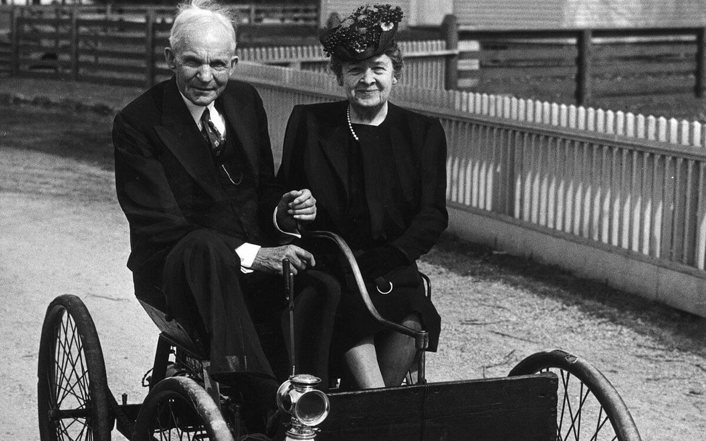
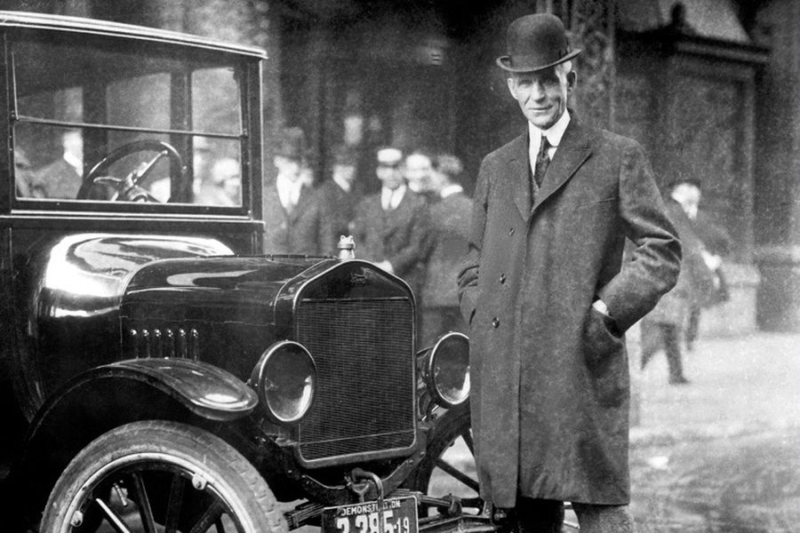
Генри Форд — изобретатель, основатель автомобильного концерна «Ford Motor Company», модернизатор поточно-конвейерного производства. Талантливый и успешный руководитель, первый повысивший минимальную зарплату рабочим, сокративший рабочий день до восьми часов, а неделю — до пяти дней. 30 июля 1863 в семье фермера Уильяма Форда родился первый ребёнок Генри. С детства он не проявлял интереса к работе отца. Он видел, что силы, затрачиваемые на выполнение тех или иных операций, порой не оправдывают себя, и внедрение механизмов позволит облегчить труд его близких. Образование Генри получил в начальной церковной школе, но никогда не испытывал угрызений совести по поводу того, что писал с ошибками. Его развитый живой ум с лихвой компенсировал этот недостаток. В двенадцать лет мальчик стал одержим идеей создания самоходного движущегося механизма, после того, как увидел локомобиль, «мчащийся» со скоростью шесть километров в час. И хотя родственники осуждали его увлечение, юный Форд поступает в качестве ученика механика в мастерскую. Вернувшись через четыре года домой, он не отказывается от своих идей и продолжает трудиться над своими изобретениями. Уже в 1887 году Генри делает предложение фермерской дочери Кларе Брайант, с которой затем счастливо прожил всю жизнь. Эта женщина всегда поддерживала и вдохновляла изобретателя, даже в те моменты истории, когда все остальные считали его идеи безумством. В 1991 году у Генри и Клары Фордов рождается сын, которого они назвали Эдсед.
Достижения
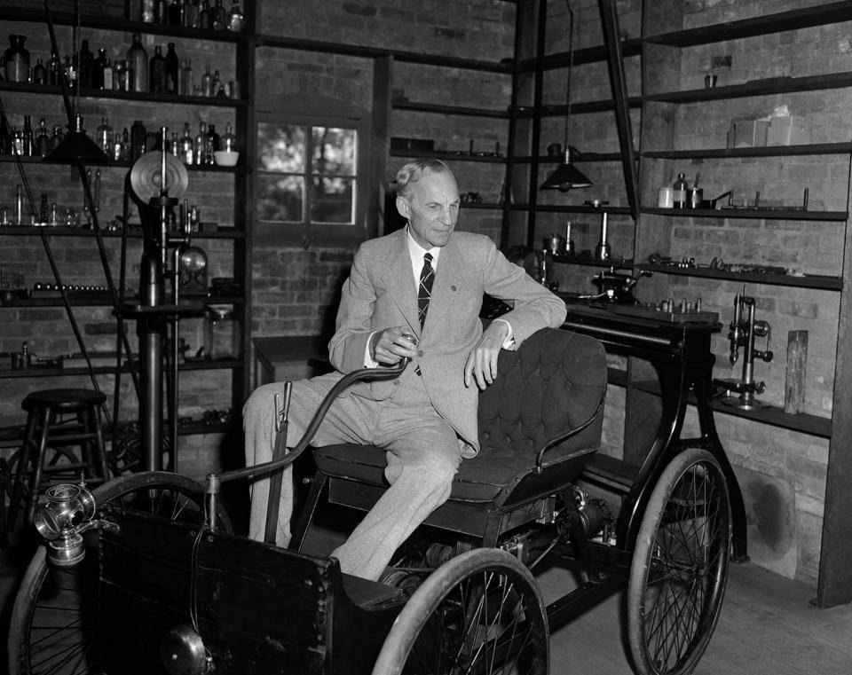
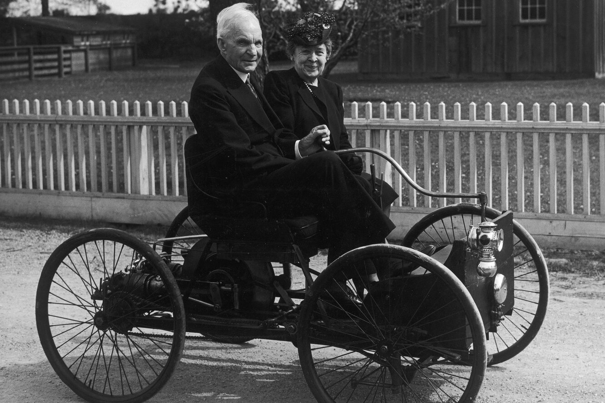
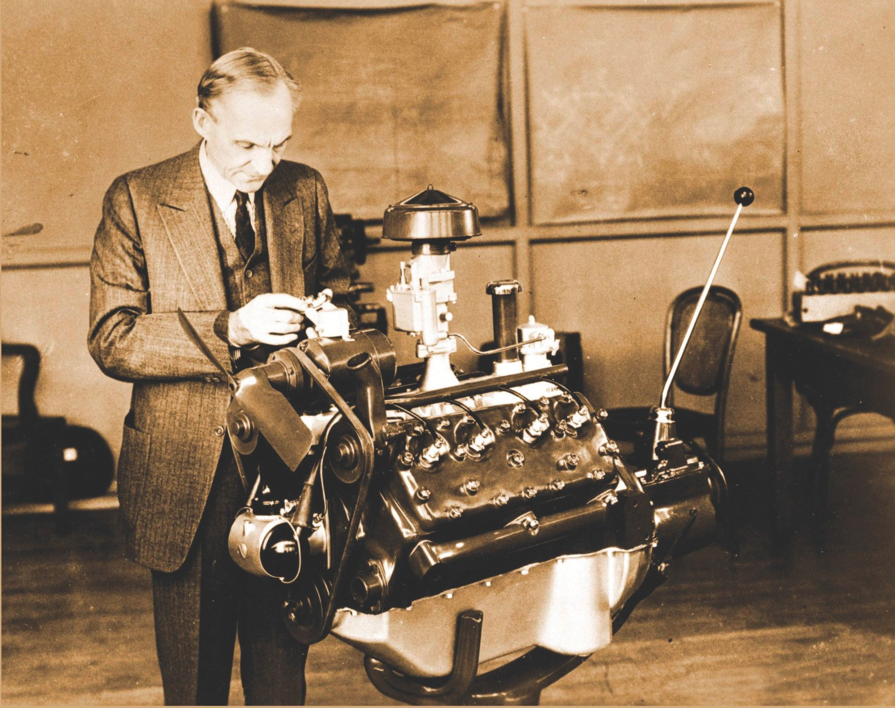
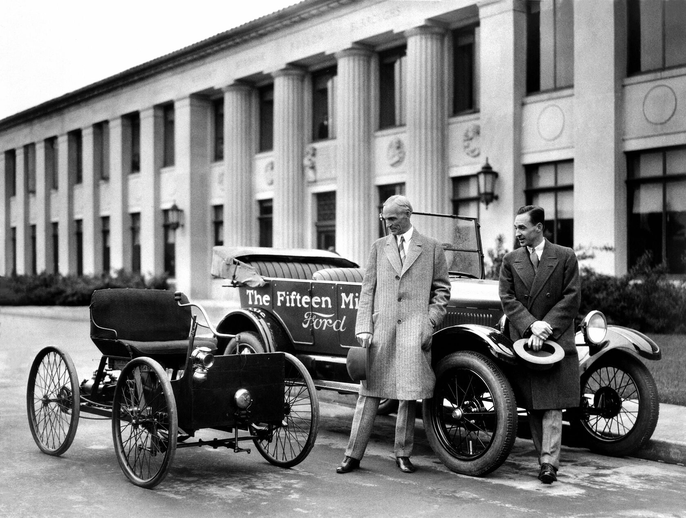
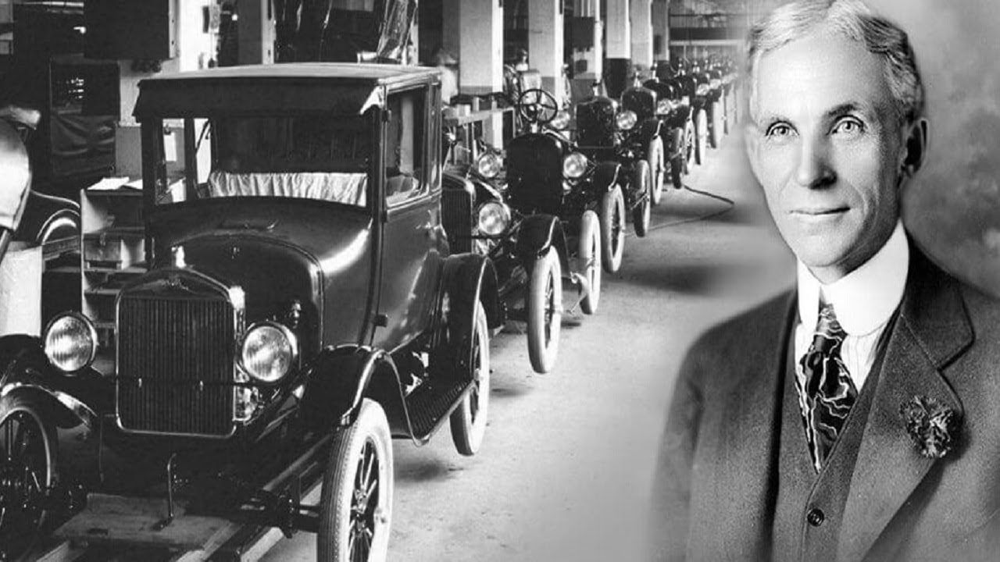
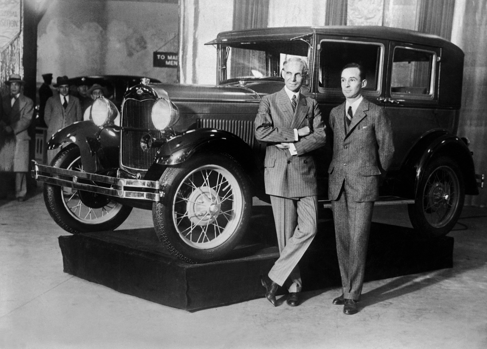
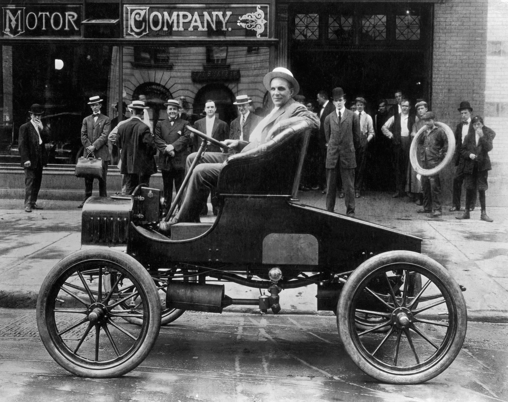
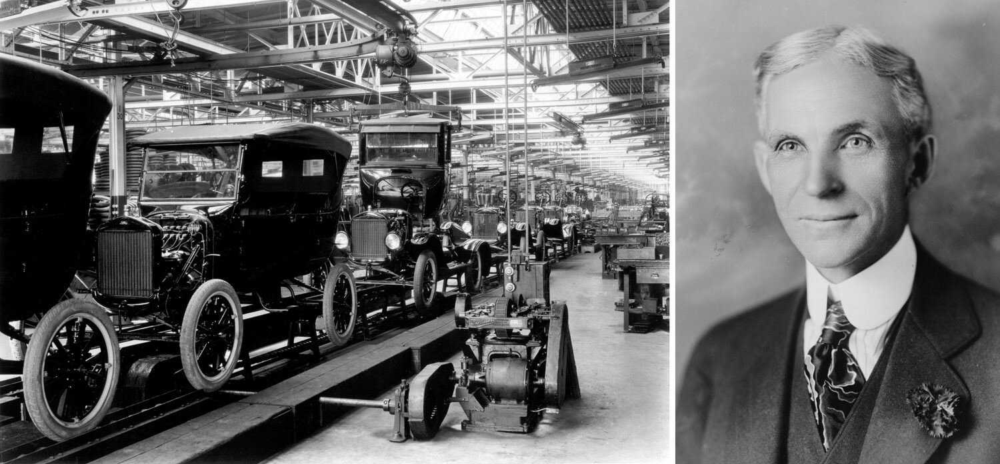
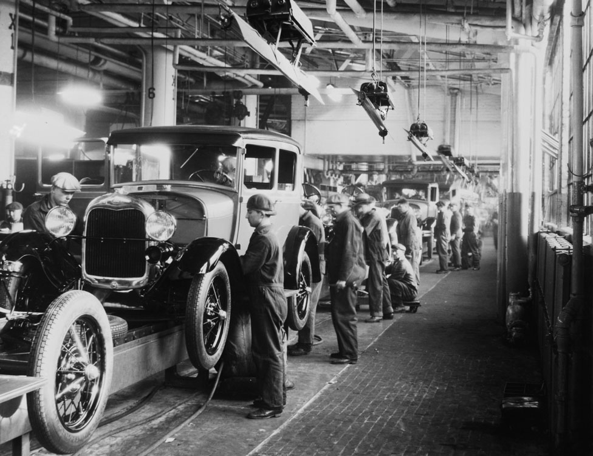
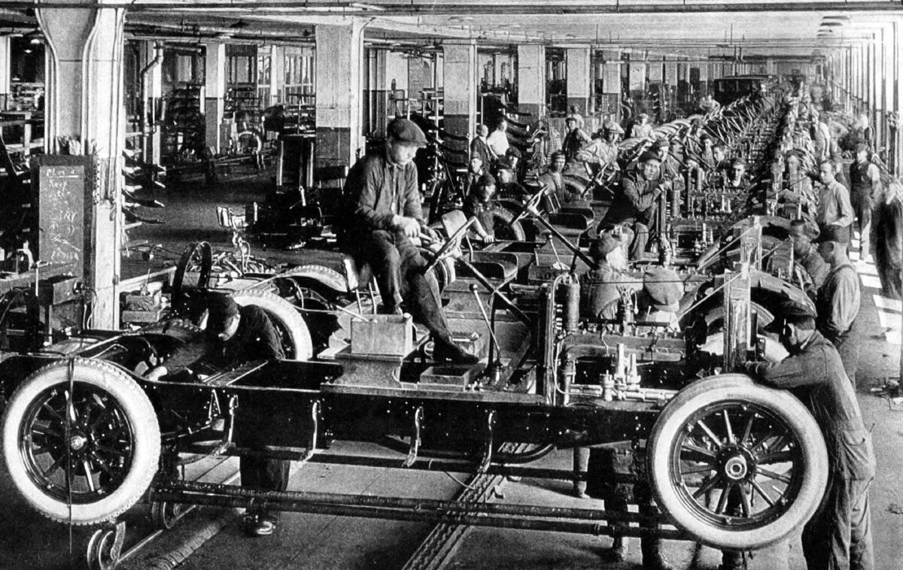